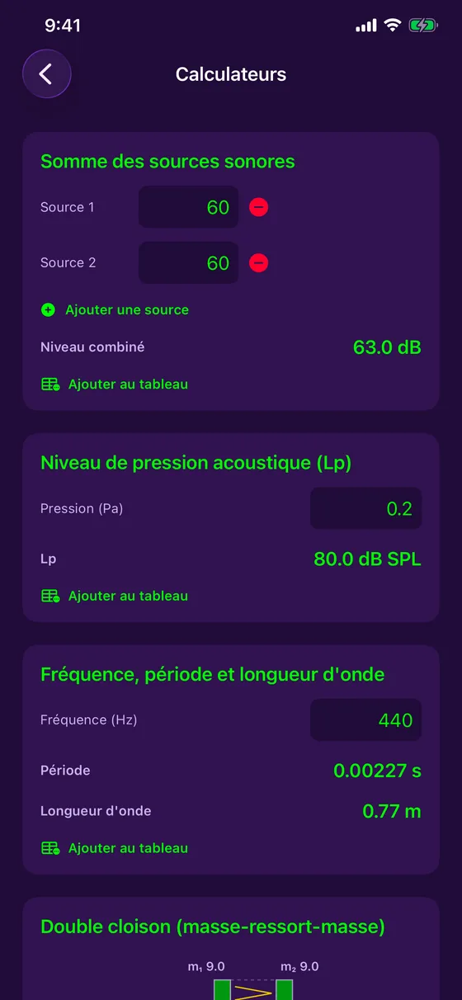

Fonctionnalités
Tout ce qu'il faut pour mesurer et corriger une pièce
Le micro et la caméra de l'iPhone, utilisés pour mesurer, calculer et documenter l'acoustique d'un lieu — sans quitter l'application, sans connexion.
Mesurer
Gratuit : de quoi mesurer au quotidien
Sonomètre en direct
Niveau en dB en temps réel, avec minimum, moyenne et maximum, et deux styles de graphique (Festival, Studio).
Étalonnage du micro
Comparez avec un sonomètre de référence et ajustez : chaque mesure indique si elle est étalonnée ou estimée.
Analyseur de spectre
Analyse des fréquences en direct (FFT) et classification du son : pur, complexe ou bruit.
Son pur
Pour un son pur, la fréquence, la période et la longueur d'onde sont calculées pour vous.
Historique en couleurs
Chaque session s'enregistre avec sa courbe : vert, jaune ou rouge selon le niveau.
Tableau des mesures
Le journal de toutes vos mesures, avec filtre, tri et export en rapport PDF avec graphiques.
En détail
Chaque outil, de près
Accordeur
Accordez à l'oreille, ou laissez l'aiguille faire le travail.
- Guitare (5 accordages), ukulélé (dont Sol grave et baryton), violon, alto, violoncelle, mandoline et banjo
- Mode chromatique pour la voix et n'importe quelle note
- Aiguille avec cents en direct et réglette de précision de ±10 cents, vibration quand c'est juste
- Lecture stabilisée qui ignore les mesures aberrantes, avec indicateur du niveau du signal
- Fréquence de référence réglable de 430 à 450 Hz, et gratuit

Sonomètre, étalonnage et historique
Le sonomètre le plus simple à ouvrir sur le terrain.
- Niveau en direct, minimum, moyenne et maximum
- Étalonnage du micro sur un instrument de référence, avec l'état d'étalonnage noté sur chaque mesure
- Historique des sessions avec leur courbe en couleurs
- Partage de l'image ou ajout au tableau des mesures

Réverbération par fréquence
Savoir où la pièce pose problème, pas seulement si elle en pose un.
- RT60 par bande d'octave, de 125 Hz à 4 kHz, comparé à la cible de votre usage (bureau, studio, salle de réunion, cinéma maison)
- Les bandes au-dessus de la cible sont signalées, avec un conseil pour les graves
- Courbes d'absorption de chaque matériau de la pièce, parmi 10 matériaux
- Modèle de Sabine et coefficients typiques : une estimation indicative

Du scan à la mousse à ajouter
Scannez la pièce, laissez l'app faire les calculs.
- Sur iPhone Pro (LiDAR), un balayage remplit les dimensions et la surface de chaque mur
- Sans LiDAR, entrez les dimensions à la main : tout le reste fonctionne
- Schéma 3D isométrique de la pièce, repris dans le tableau et le rapport PDF
- La quantité de mousse acoustique à ajouter pour atteindre la cible
- Mesure du RT60 en direct avec une courte salve de bruit

Cartographie du bruit
Voir où ça fait du bruit dans une pièce, d'un coup d'œil.
- Touchez le plan de la pièce et mesurez cinq secondes à chaque endroit
- Carte de chaleur des zones calmes et bruyantes
- Niveau le plus calme, moyenne (Leq) et niveau le plus bruyant
- Enregistrée au tableau des mesures et dans le rapport PDF

Calculateurs acoustiques
Les formules du métier, sans papier ni calculatrice.
- Somme de sources sonores : combien de dB ensemble
- Niveau de pression acoustique à partir de la pression en pascals
- Fréquence, période et longueur d'onde
- Chaque résultat s'ajoute au tableau en un toucher

Double cloison
Estimer l'isolement d'une paroi avant de la construire.
- Calcul masse-ressort-masse à partir de la masse de chaque paroi et de la profondeur de la cavité
- Fréquence de résonance et isolement par bande d'octave
- Avec ou sans laine minérale, et parois désolidarisées en option
- Estimation indicative, pas un indice Rw/STC certifié

Tableau des mesures et rapports PDF
Tout ce que vous mesurez reste rangé et se partage.
- Chaque mesure s'ajoute à un tableau central, filtrable par type
- Rapport PDF avec graphiques et schéma 3D de la pièce
- Enregistrement d'un graphique dans Photos, ou partage par les outils d'iOS
- Tout reste sur votre appareil : aucun compte, aucun serveur

Gratuit ou Acoustic Detector Complet
| Gratuit | Complet | |
|---|---|---|
| Sonomètre en direct et étalonnage | ✓ | ✓ |
| Analyseur de spectre | ✓ | ✓ |
| Accordeur | ✓ | ✓ |
| Tableau des mesures et export PDF | ✓ | ✓ |
| RT60 de la pièce et mousse à ajouter | — | ✓ |
| RT60 par bande d'octave et absorption | — | ✓ |
| Scan LiDAR de la pièce | — | ✓ |
| Cartographie du bruit | — | ✓ |
| Calculateurs et double cloison | — | ✓ |
« Acoustic Detector Complet » est un achat unique de 4,99 $ CA, sans abonnement.
Prêt à écouter votre pièce ?
Acoustic Detector est disponible sur l'App Store, pour iPhone. Gratuite, avec un achat unique facultatif.
Télécharger sur l'App Store